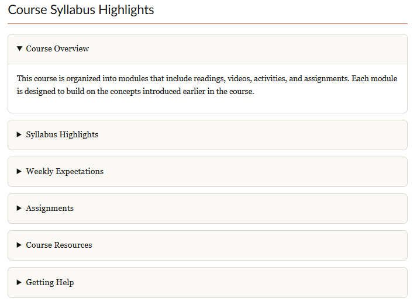
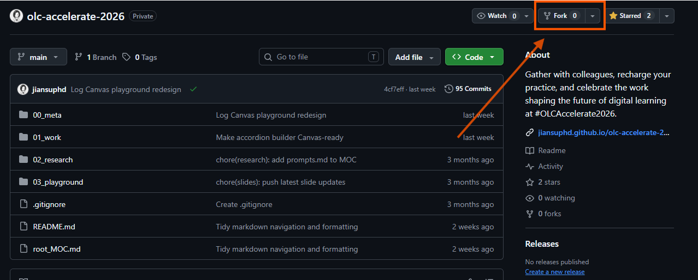
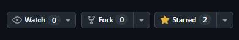
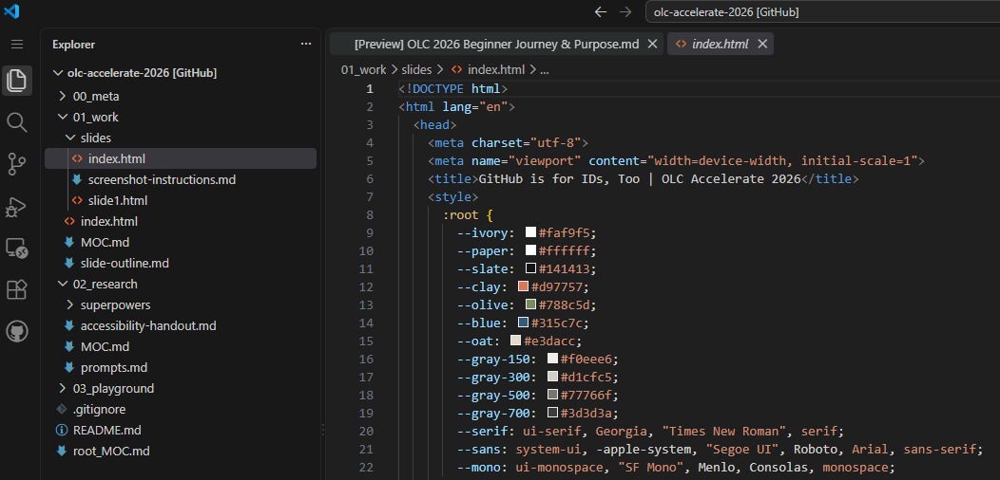
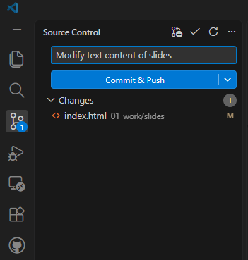
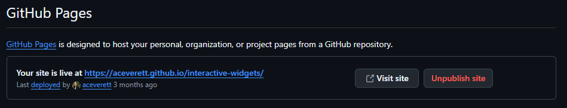

LMS editor
Reliable, but limited
Interactive ideas are often reduced to static text, links, and long vertical pages.
OLC Accelerate 2026 / education session
A useful, accessible LMS interaction—created in a browser, with AI support, and without becoming a programmer.

What we will do today
Examine the LMS constraint, the finished product, and the workflow.
Learn the five terms and actions needed for this project.
Fork, edit, check, save, publish, and embed one example together.
Customize real course content while we circulate and help.
You will also be able to explain what a repository, fork, commit, and GitHub Pages do in this workflow.
The LMS constraint
Interactive ideas are often reduced to static text, links, and long vertical pages.
Licenses and packaged exports can make small interactions expensive or difficult to revise.
Developer workflows can appear to require coding expertise, local setup, and technical support.
The psychological constraint
You do not need a new professional identity. You need a safe first workflow.
The practical bridge
Decide what students should do or notice.
Describe the interaction and required safeguards.
Customize the small webpage without local setup.
Check content, keyboard use, and responsive behavior.
Publish the webpage and embed it in the course.
Five words are enough to begin
Choose the path that fits today
No GitHub account is required. Customize the example, copy the HTML, and paste it into the LMS.
Make a personal copy, edit it in the browser, publish it, and embed the live webpage in the LMS.
Runway A is not a lesser outcome. You can move to GitHub later.
We will do this together / part one
The original repository stays intact. Your fork becomes a personal workspace where you can experiment without changing the presenters’ copy.


Look for Fork near the upper-right corner.We will do this together / part two
index.htmlUse the file list to find the interactive. Make a small, visible change and preview the result before saving.

We will do this together / part three
Write a short message that explains what you changed.
Save the new version back to your GitHub repository.

We will do this together / part four
Enable Pages for the repository and wait for GitHub to publish the site.
This web address is what you will link to or embed in the LMS.

Return to the LMS
Add the GitHub Pages URL as a module link, button, or course resource.
Embed the GitHub Pages content in the LMS HTML editor so students can interact without leaving the course.
Workshop mode
We will pause after every click so you can keep up and ask questions.
Customize real course content while we circulate and help.